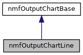

Inheritance diagram for nmfOutputChartLine:

Collaboration diagram for nmfOutputChartLine:

Public Member Functions | |
| nmfOutputChartLine (nmfLogger *logger) | |
| void | redrawChart (std::string caller, nmfDatabase *databasePtr, std::string theModelName, QChart *chart, std::map< std::string, QLabel * > &AllLabels, std::map< std::string, QComboBox * > &AllComboBoxes, std::map< std::string, QPushButton * > &AllButtons, std::map< std::string, QCheckBox * > &AllCheckBoxes, std::string MSVPAName, std::string ForecastName, std::string ScenarioName, int Forecast_FirstYear, int Forecast_NYears, int FirstYear, std::string dataType, std::string species, int selectedSpeciesNum, std::string variable, std::string byVariables, std::string season, std::string speciesAgeSizeClass, std::string selectedPreyName, std::string selectedYPRAnalysisType, std::vector< std::string > &selectedYears, std::string selectedFullyRecruitedAge, double YMaxForAllAges, bool hGridLine, bool vGridLine, QStringList &rowLabels, QStringList &colLabels, boost::numeric::ublas::matrix< double > &ChartData, boost::numeric::ublas::matrix< double > &GridData) |
Static Public Member Functions | |
| static void | getMSVPASpecies (nmfDatabase *databasePtr, const std::string &MSVPAName, int &NMSVPASpecies, boost::numeric::ublas::vector< std::string > &MSVPASpeList) |
| static void | getMSVPASpeciesNamesAges (nmfDatabase *databasePtr, const int &NMSVPASpe, boost::numeric::ublas::vector< std::string > &MSVPASpeList, std::vector< int > &MSVPASpeAge) |
| static void | getMaturity (nmfDatabase *databasePtr, const int &Forecast_NYears, const int &FirstYear, const int &NMSVPASpe, const boost::numeric::ublas::vector< std::string > &MSVPASpeList, const std::vector< int > &MSVPASpeAge, Boost3DArrayDouble &Maturity) |
| static std::string | getYAxisUnits (nmfDatabase *databasePtr, std::string selectedSpecies) |
| static void | Forecast_MultispeciesPopulations_TotalBiomass (nmfDatabase *databasePtr, QChart *chart, std::string theModelName, std::string MSVPAName, std::string ForecastName, std::string ScenarioName, int Forecast_NYears, int Forecast_FirstYear, int FirstYear, int NumYears, boost::numeric::ublas::vector< int > Years, boost::numeric::ublas::vector< std::string > LegendNames, int Nage, int RecAge, std::string seasonStr, std::string selectedSpecies, double YMaxOverride, QStringList &rowLabels, QStringList &colLabels, boost::numeric::ublas::matrix< double > &GridData) |
| static void | Forecast_MultispeciesPopulations_TotalAbundance (nmfDatabase *databasePtr, QChart *chart, std::string theModelName, std::string MSVPAName, std::string ForecastName, std::string ScenarioName, int Forecast_NYears, int Forecast_FirstYear, int FirstYear, int NumYears, boost::numeric::ublas::vector< int > Years, boost::numeric::ublas::vector< std::string > LegendNames, int Nage, int RecAge, std::string seasonStr, std::string selectedSpecies, double YMaxOverride, QStringList &rowLabels, QStringList &colLabels, boost::numeric::ublas::matrix< double > &GridData) |
| static void | Forecast_MultispeciesPopulations_Age1PlusBiomass (nmfDatabase *databasePtr, QChart *chart, std::string theModelName, std::string MSVPAName, std::string ForecastName, std::string ScenarioName, int Forecast_NYears, int Forecast_FirstYear, int FirstYear, int NumYears, boost::numeric::ublas::vector< int > Years, boost::numeric::ublas::vector< std::string > LegendNames, int Nage, int RecAge, std::string seasonStr, std::string selectedSpecies, double YMaxOverride, QStringList &rowLabels, QStringList &colLabels, boost::numeric::ublas::matrix< double > &GridData) |
| static void | Forecast_MultispeciesPopulations_Age1PlusAbundance (nmfDatabase *databasePtr, QChart *chart, std::string theModelName, std::string MSVPAName, std::string ForecastName, std::string ScenarioName, int Forecast_NYears, int Forecast_FirstYear, int FirstYear, int NumYears, boost::numeric::ublas::vector< int > Years, boost::numeric::ublas::vector< std::string > LegendNames, int Nage, int RecAge, std::string seasonStr, std::string selectedSpecies, double YMaxOverride, QStringList &rowLabels, QStringList &colLabels, boost::numeric::ublas::matrix< double > &GridData) |
| static void | Forecast_MultispeciesPopulations_SpawningStockBiomass (nmfDatabase *databasePtr, QChart *chart, std::string theModelName, std::string MSVPAName, std::string ForecastName, std::string ScenarioName, int Forecast_NYears, int Forecast_FirstYear, int FirstYear, int NumYears, boost::numeric::ublas::vector< int > Years, boost::numeric::ublas::vector< std::string > LegendNames, int Nage, int RecAge, std::string seasonStr, std::string selectedSpecies, double YMaxOverride, QStringList &rowLabels, QStringList &colLabels, boost::numeric::ublas::matrix< double > &GridData) |
| static void | Forecast_YieldPerRecruit_YPRvsF (nmfDatabase *databasePtr, QChart *chart, std::string theModelName, std::string MSVPAName, std::string ForecastName, std::string ScenarioName, int Forecast_NYears, int Forecast_FirstYear, int FirstYear, int NumYears, boost::numeric::ublas::vector< int > Years, boost::numeric::ublas::vector< std::string > LegendNames, int Nage, int RecAge, std::string seasonStr, std::string selectedSpecies, double YMaxOverride, QStringList &rowLabels, QStringList &colLabels, boost::numeric::ublas::matrix< double > &GridData) |
| static void | Forecast_YieldPerRecruit_SSBvsF (nmfDatabase *databasePtr, QChart *chart, std::string theModelName, std::string MSVPAName, std::string ForecastName, std::string ScenarioName, int Forecast_NYears, int Forecast_FirstYear, int FirstYear, int NumYears, boost::numeric::ublas::vector< int > Years, boost::numeric::ublas::vector< std::string > LegendNames, int Nage, int RecAge, std::string seasonStr, std::string selectedSpecies, double YMaxOverride, QStringList &rowLabels, QStringList &colLabels, boost::numeric::ublas::matrix< double > &GridData) |
| static void | Forecast_YieldPerRecruit_ProjectedYPR (nmfDatabase *databasePtr, QChart *chart, std::string theModelName, std::string MSVPAName, std::string ForecastName, std::string ScenarioName, int Forecast_NYears, int Forecast_FirstYear, int FirstYear, int NumYears, boost::numeric::ublas::vector< int > Years, boost::numeric::ublas::vector< std::string > LegendNames, int Nage, int RecAge, std::string seasonStr, std::string selectedSpecies, double YMaxOverride, QStringList &rowLabels, QStringList &colLabels, boost::numeric::ublas::matrix< double > &GridData) |
| static void | Forecast_YieldPerRecruit_ProjectedFBenchmarks (nmfDatabase *databasePtr, QChart *chart, std::string theModelName, std::string MSVPAName, std::string ForecastName, std::string ScenarioName, int Forecast_NYears, int Forecast_FirstYear, int FirstYear, int NumYears, boost::numeric::ublas::vector< int > Years, boost::numeric::ublas::vector< std::string > LegendNames, int Nage, int RecAge, std::string seasonStr, std::string selectedSpecies, double YMaxOverride, QStringList &rowLabels, QStringList &colLabels, boost::numeric::ublas::matrix< double > &GridData) |
| static void | Forecast_YieldPerRecruit_ProjectedSSBBenchmarks (nmfDatabase *databasePtr, QChart *chart, std::string theModelName, std::string MSVPAName, std::string ForecastName, std::string ScenarioName, int Forecast_NYears, int Forecast_FirstYear, int FirstYear, int NumYears, boost::numeric::ublas::vector< int > Years, boost::numeric::ublas::vector< std::string > LegendNames, int Nage, int RecAge, std::string seasonStr, std::string selectedSpecies, double YMaxOverride, QStringList &rowLabels, QStringList &colLabels, boost::numeric::ublas::matrix< double > &GridData) |
| static void | MSVPA_YieldPerRecruit_YPRvsF (nmfDatabase *databasePtr, QChart *chart, std::string theModelName, std::string MSVPAName, std::string ForecastName, std::string ScenarioName, int Forecast_NYears, int Forecast_FirstYear, int FirstYear, int NumYears, boost::numeric::ublas::vector< int > Years, boost::numeric::ublas::vector< std::string > LegendNames, int Nage, int RecAge, std::string seasonStr, std::string selectedSpecies, double YMaxOverride, QStringList &rowLabels, QStringList &colLabels, boost::numeric::ublas::matrix< double > &GridData) |
| static void | MSVPA_YieldPerRecruit_SSBvsF (nmfDatabase *databasePtr, QChart *chart, std::string theModelName, std::string MSVPAName, std::string ForecastName, std::string ScenarioName, int Forecast_NYears, int Forecast_FirstYear, int FirstYear, int NumYears, boost::numeric::ublas::vector< int > Years, boost::numeric::ublas::vector< std::string > LegendNames, int Nage, int RecAge, std::string seasonStr, std::string selectedSpecies, double YMaxOverride, QStringList &rowLabels, QStringList &colLabels, boost::numeric::ublas::matrix< double > &GridData) |
| static void | MSVPA_YieldPerRecruit_HistoricalYPR (nmfDatabase *databasePtr, QChart *chart, std::string theModelName, std::string MSVPAName, std::string ForecastName, std::string ScenarioName, int Forecast_NYears, int Forecast_FirstYear, int FirstYear, int NumYears, boost::numeric::ublas::vector< int > Years, boost::numeric::ublas::vector< std::string > LegendNames, int Nage, int RecAge, std::string seasonStr, std::string selectedSpecies, double YMaxOverride, QStringList &rowLabels, QStringList &colLabels, boost::numeric::ublas::matrix< double > &GridData) |
| static void | MSVPA_YieldPerRecruit_HistoricalFBenchmarks (nmfDatabase *databasePtr, QChart *chart, std::string theModelName, std::string MSVPAName, std::string ForecastName, std::string ScenarioName, int Forecast_NYears, int Forecast_FirstYear, int FirstYear, int NumYears, boost::numeric::ublas::vector< int > Years, boost::numeric::ublas::vector< std::string > LegendNames, int Nage, int RecAge, std::string seasonStr, std::string selectedSpecies, double YMaxOverride, QStringList &rowLabels, QStringList &colLabels, boost::numeric::ublas::matrix< double > &GridData) |
| static void | MSVPA_YieldPerRecruit_HistoricalSSBBenchmarks (nmfDatabase *databasePtr, QChart *chart, std::string theModelName, std::string MSVPAName, std::string ForecastName, std::string ScenarioName, int Forecast_NYears, int Forecast_FirstYear, int FirstYear, int NumYears, boost::numeric::ublas::vector< int > Years, boost::numeric::ublas::vector< std::string > LegendNames, int Nage, int RecAge, std::string seasonStr, std::string selectedSpecies, double YMaxOverride, QStringList &rowLabels, QStringList &colLabels, boost::numeric::ublas::matrix< double > &GridData) |
| static void | MSVPA_MultispeciesPopulations_TotalBiomass (nmfDatabase *databasePtr, QChart *chart, std::string theModelName, std::string MSVPAName, std::string ForecastName, std::string ScenarioName, int Forecast_NYears, int Forecast_FirstYear, int FirstYear, int NumYears, boost::numeric::ublas::vector< int > Years, boost::numeric::ublas::vector< std::string > LegendNames, int Nage, int RecAge, std::string seasonStr, std::string selectedSpecies, double YMaxOverride, QStringList &rowLabels, QStringList &colLabels, boost::numeric::ublas::matrix< double > &GridData) |
| static void | MSVPA_MultispeciesPopulations_TotalAbundance (nmfDatabase *databasePtr, QChart *chart, std::string theModelName, std::string MSVPAName, std::string ForecastName, std::string ScenarioName, int Forecast_NYears, int Forecast_FirstYear, int FirstYear, int NumYears, boost::numeric::ublas::vector< int > Years, boost::numeric::ublas::vector< std::string > LegendNames, int Nage, int RecAge, std::string seasonStr, std::string selectedSpecies, double YMaxOverride, QStringList &rowLabels, QStringList &colLabels, boost::numeric::ublas::matrix< double > &GridData) |
| static void | MSVPA_MultispeciesPopulations_Age1PlusBiomass (nmfDatabase *databasePtr, QChart *chart, std::string theModelName, std::string MSVPAName, std::string ForecastName, std::string ScenarioName, int Forecast_NYears, int Forecast_FirstYear, int FirstYear, int NumYears, boost::numeric::ublas::vector< int > Years, boost::numeric::ublas::vector< std::string > LegendNames, int Nage, int RecAge, std::string seasonStr, std::string selectedSpecies, double YMaxOverride, QStringList &rowLabels, QStringList &colLabels, boost::numeric::ublas::matrix< double > &GridData) |
| static void | MSVPA_MultispeciesPopulations_Age1PlusAbundance (nmfDatabase *databasePtr, QChart *chart, std::string theModelName, std::string MSVPAName, std::string ForecastName, std::string ScenarioName, int Forecast_NYears, int Forecast_FirstYear, int FirstYear, int NumYears, boost::numeric::ublas::vector< int > Years, boost::numeric::ublas::vector< std::string > LegendNames, int Nage, int RecAge, std::string seasonStr, std::string selectedSpecies, double YMaxOverride, QStringList &rowLabels, QStringList &colLabels, boost::numeric::ublas::matrix< double > &GridData) |
| static void | MSVPA_MultispeciesPopulations_SpawningStockBiomass (nmfDatabase *databasePtr, QChart *chart, std::string theModelName, std::string MSVPAName, std::string ForecastName, std::string ScenarioName, int Forecast_NYears, int Forecast_FirstYear, int FirstYear, int NumYears, boost::numeric::ublas::vector< int > Years, boost::numeric::ublas::vector< std::string > LegendNames, int Nage, int RecAge, std::string seasonStr, std::string selectedSpecies, double YMaxOverride, QStringList &rowLabels, QStringList &colLabels, boost::numeric::ublas::matrix< double > &GridData) |
| static void | calculateWeightAveFAndAssignPRFs (const int &NumYears, const int &RecAge, const int &Nage, boost::numeric::ublas::matrix< double > &FatAge, boost::numeric::ublas::matrix< double > &Catch, boost::numeric::ublas::vector< double > &FullF, boost::numeric::ublas::matrix< double > &PRF) |
| static double | F01 (boost::numeric::ublas::vector< double > &WeightAtAge, boost::numeric::ublas::vector< double > &FatAge, boost::numeric::ublas::vector< double > &M2atAge, boost::numeric::ublas::vector< double > &M1, double Nage) |
| static double | FMax (boost::numeric::ublas::vector< double > &WeightAtAge, boost::numeric::ublas::vector< double > &FatAge, boost::numeric::ublas::vector< double > &M2atAge, boost::numeric::ublas::vector< double > &M1, double Nage) |
| static double | YPR (boost::numeric::ublas::vector< double > &WeightAtAge, boost::numeric::ublas::vector< double > &FatAge, boost::numeric::ublas::vector< double > &M2atAge, double FullF, boost::numeric::ublas::vector< double > &M1, int Nage) |
| static double | SSB (boost::numeric::ublas::vector< double > &WeightAtAge, boost::numeric::ublas::vector< double > &FatAge, boost::numeric::ublas::vector< double > &M2atAge, double FullF, boost::numeric::ublas::vector< double > &M1, int &Nage, boost::numeric::ublas::vector< double > &Pmature) |
| static double | SSBBench (boost::numeric::ublas::vector< double > &WeightAtAge, boost::numeric::ublas::vector< double > &FatAge, boost::numeric::ublas::vector< double > &M2atAge, boost::numeric::ublas::vector< double > &M1, int &Nage, boost::numeric::ublas::vector< double > &Pmature, double BenchVal) |
| static void | loadChartWithData (QChart *chart, double YMax, std::string species, boost::numeric::ublas::matrix< double > &ChartData, boost::numeric::ublas::vector< std::string > &LegendNames, std::string mainTitle, std::string xTitle, std::string yTitle, std::vector< std::string > xLabels, bool rotateLabels) |
| static void | setTitles (QChart *chart, QLineSeries *series, QStringList categories, std::string species, std::string mainTitle, std::vector< std::string > &xLabels, std::vector< std::string > &yLabels, std::string xTitle, std::string yTitle, double min, double max, double inc, std::string suffix) |
Additional Inherited Members | |
 Protected Attributes inherited from nmfOutputChartBase Protected Attributes inherited from nmfOutputChartBase | |
| bool | hGridLine |
The documentation for this class was generated from the following files:
- nmfGuiComponentsMain/nmfOutputChartLine.h
- nmfGuiComponentsMain/nmfOutputChartLine.cpp